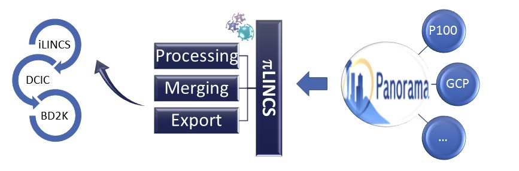

piLINCS has been developed as part of the BD2K-LINCS Data Coordination and Integration Center to provide interactive and API access to proteomics data generated by the Library of Integrated Network-based Signatures (LINCS) program. At present, piLINCS enables access to the reduced representation phosphoproteomic ("P100") and global chromatin ("GCP") profiles generated by using mass spectrometry techniques to characterize proteome level molecular signatures of (responses to) small molecule and genetic perturbations in a number of different cell lines (for details see LINCS/Broad). These different profiles (obtained by merging QC+NORM level processed GCT files from Panorama repository) can be browsed interactively, filtered based on user defined selection of cell - perturbation - dose tuples, merged across different profiles (for the same tuples), analyzed in iLINCS (more tools to come), and exported in several different formats. Please explore the tabs above and see piLINCS Wiki pages for more help.

NOTE: LINCS data generation effort is on-going.
piLINCS is being updated as new data are being added to Panorama.
In order to download the most recent version of the entire data set available through piLINCS use the following links.
P100 dataset in GCT format
eh3.uc.edu/pilincs/api-gct/P100
P100 dataset with quantile normalization
eh3.uc.edu/pilincs/api-normalized-gct/P100
GCP dataset in GCT format
eh3.uc.edu/pilincs/api-gct/GCP
GCP dataset with quantile normalization
eh3.uc.edu/pilincs/api-normalized-gct/GCP